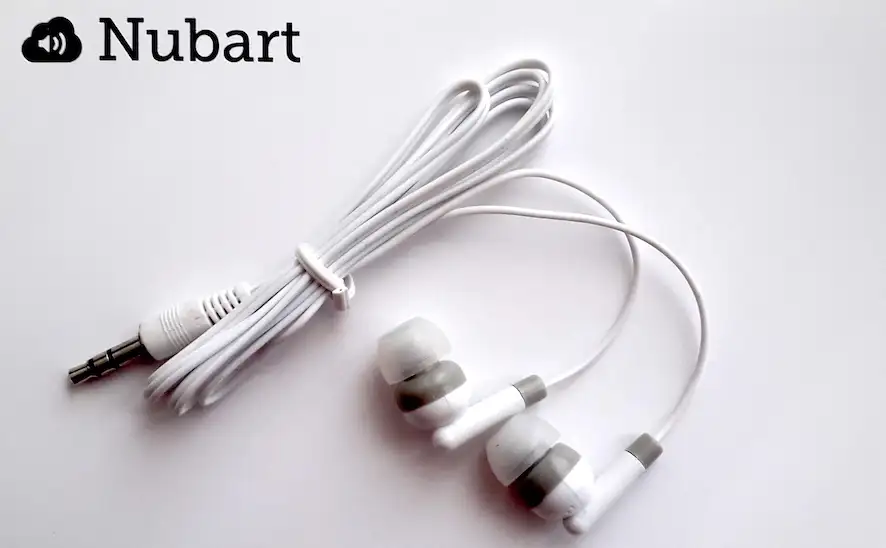
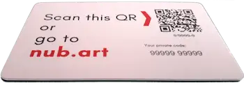

Najczęściej zadawane pytania dotyczące Nubart
Ogólne
Unikalne kody QR wydrukowane na naszych kartach działają jak klucz, zapewniając ich posiadaczowi ekskluzywny dostęp do wszystkich treści cyfrowych.
Chcąc uzyskać dostęp do tych treści, Odwiedzający skanują kod QR lub wpisują kod alfanumeryczny na stronie internetowej podanej na karcie.
Nubart opracował unikalną kombinację transakcyjnych plików cookie + systemu opt-in o nazwie LWAC (patent oczekuje na zatwierdzenie), aby zapewnić niezbywalny dostęp do treści cyfrowych.
Dzięki LWAC, posiadacze kart mogą korzystać z audioprzewodnika tak często, jak chcą, ze smartfona, z innego urządzenia lub z komputera - nawet miesiące lub lata później. Karta nie może być jednak używana przez nikogo innego.
W ten sposób zapewniamy, że audioprzewodniki-karty Nubart mają wartość komercyjną. Gwarantujemy również wysoką jakość anonimowych danych, które zbieramy od Odwiedzających.
Ponadto, te unikalne kody pozwalają nam na dodanie całej gamy usług, które nie byłyby możliwe w przypadku konwencjonalnego PWA: system oprowadzania grup, gra typu "złap i odpowiedz", specjalne zniżki dla właściciela karty...
Nubart opracował unikalną kombinację transakcyjnych plików cookie + systemu opt-in o nazwie LWAC (patent oczekuje na zatwierdzenie), aby zapewnić niezbywalny dostęp do treści cyfrowych.
Dzięki LWAC, posiadacze kart mogą korzystać z audioprzewodnika tak często, jak chcą, ze smartfona, z innego urządzenia lub z komputera - nawet miesiące lub lata później. Karta nie może być jednak używana przez nikogo innego.
W ten sposób zapewniamy, że audioprzewodniki-karty Nubart mają wartość komercyjną. Gwarantujemy również wysoką jakość anonimowych danych, które zbieramy od Odwiedzających.
Ponadto, te unikalne kody pozwalają nam na dodanie całej gamy usług, które nie byłyby możliwe w przypadku konwencjonalnego PWA: system oprowadzania grup, gra typu "złap i odpowiedz", specjalne zniżki dla właściciela karty...
Nasze ścieżki audio są przesyłane strumieniowo, więc tylko ścieżki kliknięte przez Odwiedzającego zużywają dane (w przeciwieństwie do większości aplikacji, które zmuszają do pobrania całej zawartości na raz). Ilość danych zużywanych przez te ścieżki wynosi 0,46 MB na minutę: 1/5 ilości zużywanej przez serwisy muzyczne, takie jak Spotify.
Biorąc pod uwagę tak niskie zużycie danych, uważamy, że udostępnianie darmowego Wifi nie jest konieczne, zwłaszcza gdy ogólny zasięg danych komórkowych jest dobry (dodatkowo obywatele UE nie muszą już płacić za roaming).
Opracowaliśmy jednak tryb offline na wypadek, gdyby stabilne przesyłanie danych komórkowych było problemem. Tryb ten umożliwia wstępne załadowanie wszystkich ścieżek dźwiękowych do pamięci tymczasowej (RAM) urządzenia Odwiedzającego. Gdy wszystkie ścieżki dźwiękowe są już załadowane, Zwiedzający mogą ich słuchać w miejscach bez zasięgu. Wszystko bez konieczności pobierania jakiejkolwiek aplikacji!
Biorąc pod uwagę tak niskie zużycie danych, uważamy, że udostępnianie darmowego Wifi nie jest konieczne, zwłaszcza gdy ogólny zasięg danych komórkowych jest dobry (dodatkowo obywatele UE nie muszą już płacić za roaming).
Opracowaliśmy jednak tryb offline na wypadek, gdyby stabilne przesyłanie danych komórkowych było problemem. Tryb ten umożliwia wstępne załadowanie wszystkich ścieżek dźwiękowych do pamięci tymczasowej (RAM) urządzenia Odwiedzającego. Gdy wszystkie ścieżki dźwiękowe są już załadowane, Zwiedzający mogą ich słuchać w miejscach bez zasięgu. Wszystko bez konieczności pobierania jakiejkolwiek aplikacji!
Tak, możemy spersonalizować layout według Twoich wytycznych. Możesz określić m.in. kolory, czcionki, kształt przycisków odtwarzacz, odstępy między elementami oraz obramowanie dla zdjęć.
Personalizacja podlega dodatkowej opłacie.
Personalizacja podlega dodatkowej opłacie.
W Nubart dbamy o środowisko!
Możesz wybrać ekologiczny materiał, na którym chcesz wydrukować swoje karty:
Możesz wybrać ekologiczny materiał, na którym chcesz wydrukować swoje karty:
- PVC z recyklingu.
- Specjalny karton o wysokiej wytrzymałości, z certyfikatem FSC.
- Bio-PVC ulega biodegradacji.
TAK!
Kod QR na kartach jest wydrukowany z lekką wypukłością. Dzięki temu osoby niedowidzące mogą wykryć jego obecność i położenie za pomocą palca oraz uchwycić go za pomocą skanera QR w swoim smartfonie.
Nasz autorski CMS został opracowany w technologii Universal Design.
Więcej szczegółów można znaleźć na naszym blogu.
Ponadto:
Kod QR na kartach jest wydrukowany z lekką wypukłością. Dzięki temu osoby niedowidzące mogą wykryć jego obecność i położenie za pomocą palca oraz uchwycić go za pomocą skanera QR w swoim smartfonie.
Nasz autorski CMS został opracowany w technologii Universal Design.
Więcej szczegółów można znaleźć na naszym blogu.
Ponadto:
Audioprzewodniki (Nubart Guide)
Naszym celem jest zminimalizowanie Twojej pracy.
W zasadzie potrzebujemy tylko zdjęć i kilku informacji od Ciebie. Zajmiemy się całą resztą! Będziemy informować Cię na bieżąco o postępach w procesie produkcji. Każdy z etapów będzie wymagał Twojej akceptacji.
Materiały potrzebne firmie Nubart do przygotowania audioprzewodnika
W zasadzie potrzebujemy tylko zdjęć i kilku informacji od Ciebie. Zajmiemy się całą resztą! Będziemy informować Cię na bieżąco o postępach w procesie produkcji. Każdy z etapów będzie wymagał Twojej akceptacji.
Materiały potrzebne firmie Nubart do przygotowania audioprzewodnika
Muzea mają swobodę wyboru modelu dystrybucji kart Nubart wśród swoich Zwiedzających.
Na przykład:
Na przykład:
- Audioprzewodnik jako gratis (w cenie biletu)
- Gratisowe audioprzewodniki jako promocja obiektu, aby zachęcić więcej Zwiedzających (np. w określone dni).
- Bezpłatne rozdawanie w ramach partnerstwa sponsorskiego
- Sprzedaż audioprzewodników w cenie pokrywającej koszty produkcji
- Sprzedaż audioprzewodników z zyskiem
NNajczęściej oferowanym przez nas modelem jest zakup kart jako produktu zawierającego prawie wszystkie nasze cyfrowe funkcje. Nowe lub dodatkowe zamówienia mogą być składane w dowolnym momencie. Minimalne zamówienie to 3 000 sztuk.
Dla obiektów z dużą liczbą Zwiedzających i chcących dołączyć audioprzewodnik-kartę do opłaty za wstęp, możemy zaoferować umowę ryczałtową.
Natomiast muzeom i innym obiektom z ponad 100 000 Zwiedzających rocznie, które chcą sprzedawać audioprzewodniki-karty jako dodatkowy element, możemy rozważyć zawarcie umowy o podziale dochodów.
Dla obiektów z dużą liczbą Zwiedzających i chcących dołączyć audioprzewodnik-kartę do opłaty za wstęp, możemy zaoferować umowę ryczałtową.
Natomiast muzeom i innym obiektom z ponad 100 000 Zwiedzających rocznie, które chcą sprzedawać audioprzewodniki-karty jako dodatkowy element, możemy rozważyć zawarcie umowy o podziale dochodów.
W dzisiejszych czasach większość ludzi nosi przy sobie własne słuchawki. Nawet jeśli tak nie jest, zwiedzający mogą zmniejszyć głośność, a zamiast trzymać smartfon w ręku, jak podczas odbierania rozmowy telefonicznej, mogą trzymać dolny głośnik przy uchu. Ponieważ audioprzewodniki mają krótkie ścieżki, które są słuchane oddzielnie, a nie w sposób ciągły, jak w przypadku audiobooków czy muzyki, nie stanowi to większego problemu. Mamy kilku klientów, którzy nie oferują żadnych słuchawek.
Jeśli jednak uważasz, że słuchawki są niezbędne w Twoim obiekcie, z przyjemnością je dostarczymy. Co więcej, dostosujemy opakowanie z odpowiednim logo, jak widać na poniższym zdjęciu.
Jeśli jednak uważasz, że słuchawki są niezbędne w Twoim obiekcie, z przyjemnością je dostarczymy. Co więcej, dostosujemy opakowanie z odpowiednim logo, jak widać na poniższym zdjęciu.

Obecnie nasz system obsługuje ponad 40 języków, w tym języki synostroverse (RTL), takie jak arabski i hebrajski.
Zobacz, jak języki od prawej do lewej są wizualizowane w Nubart
Zobacz, jak języki od prawej do lewej są wizualizowane w Nubart
Zaletą naszego systemu kart jest właśnie to, że Państwa instytucja nie musi zajmować się żmudnym zarządzaniem i konserwacją urządzeń dla odwiedzających.
Może się jednak zdarzyć, że niektórzy goście nie mają przy sobie smartfona. Jeśli chcą Państwo być przygotowani na takie przypadki, zalecamy zakup 5-10 tanich smartfonów z systemem Android od zaufanego lokalnego dostawcy i posiadanie ich w gotowości jako kopii zapasowej dla gości bez smartfonów.
Jeśli znajdują się Państwo w UE, mogą Państwo poprosić swojego dostawcę o przesłanie tych urządzeń na nasz berliński adres. Za niewielką opłatą zoptymalizujemy je tak, aby umożliwiały dostęp tylko do naszego audioprzewodnika (tryb kiosku + określone presety) i odeślemy je do Państwa. Jeżeli znajdują się Państwo poza UE lub nie chcą ponosić tej opłaty, możemy dostarczyć Państwu niezbędne instrukcje i skrypt dla Państwa technika, aby samodzielnie wykonać tę manipulację.
Może się jednak zdarzyć, że niektórzy goście nie mają przy sobie smartfona. Jeśli chcą Państwo być przygotowani na takie przypadki, zalecamy zakup 5-10 tanich smartfonów z systemem Android od zaufanego lokalnego dostawcy i posiadanie ich w gotowości jako kopii zapasowej dla gości bez smartfonów.
Jeśli znajdują się Państwo w UE, mogą Państwo poprosić swojego dostawcę o przesłanie tych urządzeń na nasz berliński adres. Za niewielką opłatą zoptymalizujemy je tak, aby umożliwiały dostęp tylko do naszego audioprzewodnika (tryb kiosku + określone presety) i odeślemy je do Państwa. Jeżeli znajdują się Państwo poza UE lub nie chcą ponosić tej opłaty, możemy dostarczyć Państwu niezbędne instrukcje i skrypt dla Państwa technika, aby samodzielnie wykonać tę manipulację.
Tour Guide System – oprowadzanie grup (Nubart Live)
Cała "praca w tle" naszej technologii odbywa się w smartfonie Przewodnika. Dlatego najlepszym rozwiązaniem jest, aby to Przewodnik miał nowoczesny smartfon z dobrym procesorem i w miarę nową baterią.
Nie dotyczy to jednak smartfonów Odwiedzających: w tym przypadku obciążenie baterii nie jest dużo większe niż podczas słuchania podcastu lub audiobooka. Przykładowo: godzina ciągłego użytkowania zużywa 8% baterii w 4-letnim telefonie z systemem Android.
Około 20 MB na godzinę. Znacznie mniej niż w przypadku słuchania muzyki lub oglądania filmów!
Oczywiście!
Wysyłają Państwo do nas zdjęcia, logo i inne elementy, które chcieliby Państwo mieć na karcie, a nasz projektant tworzy kilka propozycji wyglądu kart do wyboru.
Wysyłają Państwo do nas zdjęcia, logo i inne elementy, które chcieliby Państwo mieć na karcie, a nasz projektant tworzy kilka propozycji wyglądu kart do wyboru.
Jeśli podoba Ci się poniższy projekt marki Nubart, wydrukowany na przyjaznym dla środowiska, bardzo mocnym kartonie, nasze minimalne zamówienie to 500 sztuk.
Jeśli wolisz, aby Twoje karty zostały zaprojektowane (spersonalizowane) na zamówienie, minimalna ilość to 4000 sztuk.
Jeśli wolisz, aby Twoje karty zostały zaprojektowane (spersonalizowane) na zamówienie, minimalna ilość to 4000 sztuk.

Jeśli zdecydujesz się na karty z marką Nubart, dostęp może mieć dwóch Przewodników na każde zamówione 500 kart. Zatem im więcej kart zamówisz, tym więcej Przewodników będzie miało dostęp do tego systemu.
Przy zakupie profesjonalnego pakietu z ilością 5.000 kart, liczba Przewodników jest nieograniczona.
Przy zakupie profesjonalnego pakietu z ilością 5.000 kart, liczba Przewodników jest nieograniczona.
Niewielkie opóźnienie między nadawcą a odbiorcą, wynoszące do jednej sekundy jest nieuniknione.
Na opóźnienie ma wpływ kilka czynników, takich jak moc smartfona, jakość połączenia oraz to, czy nadawca i odbiorca korzystają z tego samego dostawcy danych komórkowych.
Jeśli jednak Przewodnik mówi niskim głosem, efekt echa spowodowany opóźnieniem będzie ledwie zauważalny, ponieważ głos odbierany na smartfonie będzie dominujący dla zwiedzających.
Na opóźnienie ma wpływ kilka czynników, takich jak moc smartfona, jakość połączenia oraz to, czy nadawca i odbiorca korzystają z tego samego dostawcy danych komórkowych.
Jeśli jednak Przewodnik mówi niskim głosem, efekt echa spowodowany opóźnieniem będzie ledwie zauważalny, ponieważ głos odbierany na smartfonie będzie dominujący dla zwiedzających.

W zasadzie moglibyśmy generować unikalne kody QR i skanować je tak, jak w przypadku cyfrowej karty pokładowej. Ale jest kilka dobrych powodów, które przemawiają za naszymi kartami:
- Nie każdy wie, jak zeskanować kod QR. Nasza karta daje alternatywną możliwość jaką jest ręczne wprowadzenie kodu alfanumerycznego.
- Zawsze znajdzie się ktoś, kto spóźni się do grupy. Dzięki temu, że nasza karta jest łatwa w obsłudze, Przewodnik musi po prostu cicho wręczyć ją nowoprzybyłemu i szybko zeskanować, gdy będzie gotowy - bez zbędnego zamieszania.
- Uczestnicy mają możliwość ponownego wprowadzenia lub zeskanowania kodu w każdej chwili, jeśli wystąpią problemy ze smartfonem (np. rozładowana bateria).
- Karty są niezbywalne, ale uczestnik może ponownie wykorzystać swoją własną kartę na kilka wycieczek.
Jeśli chcesz odebrać to połączenie, po prostu kliknij na "wycisz (mute)" i odbierz.
Grupa pozostanie zawieszona, podczas gdy Ty będziesz rozmawiać przez telefon. Kiedy skończysz rozmowę, wróć do przeglądarki. Jeśli nie widzisz wszystkich osób w grupie z zielonym światłem, odśwież stronę: połączenia zostaną przywrócone bez konieczności ponownego skanowania wszystkich kodów QR.
Uwaga: Jeśli używasz systemu Android i zapomnisz kliknąć "wycisz (mute)" przed odebraniem połączenia, goście mogą słyszeć, co mówisz do rozmówcy, ale nie będą w stanie usłyszeć rozmówcy. W przeciwieństwie do iPhone'a - tam żaden z głosów nie będzie słyszalny.
Grupa pozostanie zawieszona, podczas gdy Ty będziesz rozmawiać przez telefon. Kiedy skończysz rozmowę, wróć do przeglądarki. Jeśli nie widzisz wszystkich osób w grupie z zielonym światłem, odśwież stronę: połączenia zostaną przywrócone bez konieczności ponownego skanowania wszystkich kodów QR.
Uwaga: Jeśli używasz systemu Android i zapomnisz kliknąć "wycisz (mute)" przed odebraniem połączenia, goście mogą słyszeć, co mówisz do rozmówcy, ale nie będą w stanie usłyszeć rozmówcy. W przeciwieństwie do iPhone'a - tam żaden z głosów nie będzie słyszalny.
Nie.
Wystarczy, że na początku podróży zeskanujesz wszystkie karty w swojej grupie, aby otworzyć sesję. Sesja, którą otworzysz, zostanie zapisana na Twoim koncie Nubart, nawet jeśli Ty lub podróżni zamkniecie przeglądarkę. Jeśli są jeszcze jakieś osoby, wystarczy, że zeskanujesz ich karty, aby dodać je do już otwartej grupy. To takie proste!
. Od czasu do czasu członkowie grupy będą musieli ponownie zeskanować swoją kartę, aby ponownie dołączyć do sesji. Nie zapomnij poprosić ich, aby zachowali kartę i zawsze mieli ją pod ręką!
Wystarczy, że na początku podróży zeskanujesz wszystkie karty w swojej grupie, aby otworzyć sesję. Sesja, którą otworzysz, zostanie zapisana na Twoim koncie Nubart, nawet jeśli Ty lub podróżni zamkniecie przeglądarkę. Jeśli są jeszcze jakieś osoby, wystarczy, że zeskanujesz ich karty, aby dodać je do już otwartej grupy. To takie proste!
. Od czasu do czasu członkowie grupy będą musieli ponownie zeskanować swoją kartę, aby ponownie dołączyć do sesji. Nie zapomnij poprosić ich, aby zachowali kartę i zawsze mieli ją pod ręką!
1) Połączenie z Internetem
Krótka, nietechniczna odpowiedź:
Nie jest wysokie, jeśli sieć jest prawidłowo skonfigurowana!
Długa, techniczna odpowiedź:
Jeśli konfiguracja Twojej sieci (NAT, firewall, topologia) pozwala na połączenia peer-to-peer dla Web-RTC i wszyscy uczestnicy są w tej samej sieci WLAN, rzeczywisty sygnał głosowy nie używa połączenia internetowego. Dzieje się tak dlatego, że każdy słuchacz po nawiązaniu połączenia ma połączenie peer-to-peer z mówcą. Połączenie internetowe jest potrzebne tylko do zarządzania każdym połączeniem, co nie wymaga dużej przepustowości.
2) WIFI/WLAN
Sieć LAN musi być w stanie obsłużyć ilość użytkowników jednocześnie (maska podsieci), a hotspoty WIFI muszą być w stanie obsłużyć przepustowość i liczbę użytkowników. Proszę zwrócić się do swojego technika, aby to sprawdził.
Jeśli konfiguracja sieci nie pozwala na połączenia peer-to-peer dla Web-RTC, istnieje system awaryjny, aby uchwycić taki scenariusz. Jednak ten system awaryjny wykorzystuje serwer przekaźnikowy (serwer Turn) w Internecie i wymagałby, aby sygnał głosowy przechodził przez Internet (patrz 1.), dlatego zalecamy zezwolenie na połączenie peer-to-peer w Twojej sieci.
Alternatywnie można skonfigurować lokalny serwer Turn.
. Jeśli chcesz skorzystać z tej alternatywy, skontaktuj się z nami, ponieważ wymaga to trochę dodatkowej pracy z naszej strony
Krótka, nietechniczna odpowiedź:
Nie jest wysokie, jeśli sieć jest prawidłowo skonfigurowana!
Długa, techniczna odpowiedź:
Jeśli konfiguracja Twojej sieci (NAT, firewall, topologia) pozwala na połączenia peer-to-peer dla Web-RTC i wszyscy uczestnicy są w tej samej sieci WLAN, rzeczywisty sygnał głosowy nie używa połączenia internetowego. Dzieje się tak dlatego, że każdy słuchacz po nawiązaniu połączenia ma połączenie peer-to-peer z mówcą. Połączenie internetowe jest potrzebne tylko do zarządzania każdym połączeniem, co nie wymaga dużej przepustowości.
2) WIFI/WLAN
Sieć LAN musi być w stanie obsłużyć ilość użytkowników jednocześnie (maska podsieci), a hotspoty WIFI muszą być w stanie obsłużyć przepustowość i liczbę użytkowników. Proszę zwrócić się do swojego technika, aby to sprawdził.
Jeśli konfiguracja sieci nie pozwala na połączenia peer-to-peer dla Web-RTC, istnieje system awaryjny, aby uchwycić taki scenariusz. Jednak ten system awaryjny wykorzystuje serwer przekaźnikowy (serwer Turn) w Internecie i wymagałby, aby sygnał głosowy przechodził przez Internet (patrz 1.), dlatego zalecamy zezwolenie na połączenie peer-to-peer w Twojej sieci.
Alternatywnie można skonfigurować lokalny serwer Turn.
. Jeśli chcesz skorzystać z tej alternatywy, skontaktuj się z nami, ponieważ wymaga to trochę dodatkowej pracy z naszej strony
Synchronizacja audio-wideo w oparciu o przeglądarkę (Nubart Sync)
Tutaj znajdą Państwo film z instrukcjami:
Mogą je Państwo pobrać w formacie PDF tutaj (w języku angielskim):
Mogą je Państwo pobrać w formacie PDF tutaj (w języku angielskim):
Proszę pobrać nasze instrukcje dla Brightsign
Proszę upewnić się, że konfiguracja sieci zawiera naszą domenę "nub.art" na białej liście i zezwala na nieograniczone wychodzące żądania HTTPS POST do tej domeny.
Jeśli obawiasz się nielegalnego skopiowania Twoich filmów, możesz być pewien, że nasza platforma oferuje znacznie bezpieczniejsze rozwiązanie niż typowe platformy hostingu wideo: nie musisz nawet przesyłać oryginału.
W celu odtworzenia filmu na miejscu można odtwarzać oryginalne wideo z lokalnego dysku twardego (bez opuszczania lokalnego komputera). Pozwala to również na odtwarzanie przy niskiej przepustowości Internetu. Jedynym wymogiem dotyczącym filmu, który przesyłasz na naszą platformę jest to, że musi on być dokładnie tej samej długości co oryginał, ale może (i powinien) być wersją o niskiej rozdzielczości, nawet ze znakiem wodnym lub innymi modyfikacjami. Przesłane wideo służy jedynie do przetestowania, czy wideo i odpowiadające mu pliki audio mp3 są zsynchronizowane.
W celu odtworzenia filmu na miejscu można odtwarzać oryginalne wideo z lokalnego dysku twardego (bez opuszczania lokalnego komputera). Pozwala to również na odtwarzanie przy niskiej przepustowości Internetu. Jedynym wymogiem dotyczącym filmu, który przesyłasz na naszą platformę jest to, że musi on być dokładnie tej samej długości co oryginał, ale może (i powinien) być wersją o niskiej rozdzielczości, nawet ze znakiem wodnym lub innymi modyfikacjami. Przesłane wideo służy jedynie do przetestowania, czy wideo i odpowiadające mu pliki audio mp3 są zsynchronizowane.